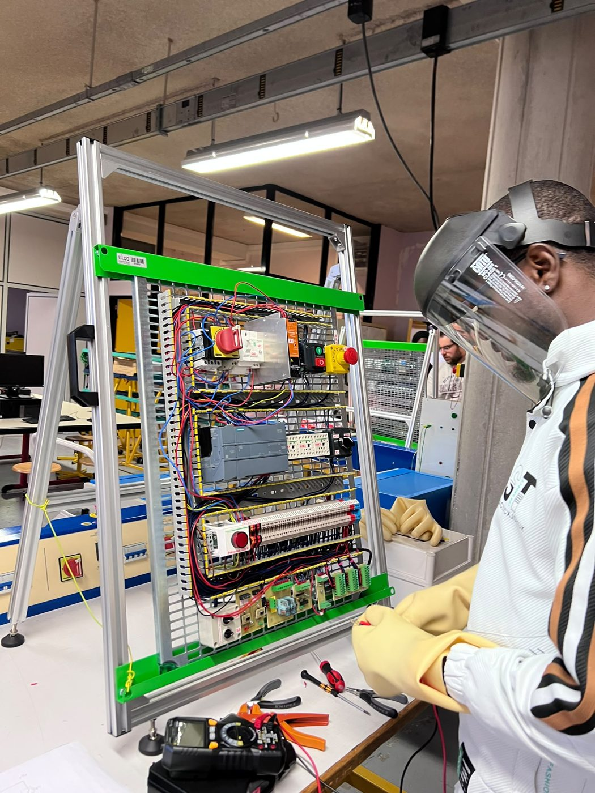

Formations
De l'électrotechnique au Tchad et au Cameroun jusqu'au BUT GEII à Calais.
-
2025 à 2028
BUT Génie Électrique et Informatique Industrielle (GEII)
IUT du Littoral Côte d'Opale, Calais. Parcours Automatisme et Informatique Industrielle.
Automatisme, électronique, informatique industrielle et énergie. Je travaille par projets (SAÉ) : un minuteur sur FPGA, un volet roulant automatisé et une liaison série entre un microcontrôleur et un automate. Voir mes projets.
-
2023 à 2024
Technicien spécialisé en électrotechnique
Centre de formation professionnelle de l'excellence, Douala (Cameroun).
Formation professionnelle en électrotechnique, validée par le diplôme de technicien spécialisé. Elle a été suivie de mon stage chez CAMRAIL en juillet 2024.
-
2022 à 2023
Baccalauréat technique en électrotechnique
Lycée technique industriel de N'Djamena (Tchad).
Bases de l'électrotechnique : lecture de schémas, installations électriques, circuits.
Habilitations électriques
Formation de 12 heures suivie à l'IUT de Calais du 22 septembre au 21 novembre 2025, avec modules théoriques et pratiques. L'attestation est valable jusqu'au 21 novembre 2028.
| Symbole | Personnel | Domaine de tension |
|---|---|---|
| B0 | Non électricien exécutant | BT et TBT |
| H0H0V | Non électricien exécutant | HTA |
| BE manœuvre | Opérations spécifiques | BT et TBT |
| BE mesure | Opérations spécifiques | BT et TBT |
| BE vérification | Opérations spécifiques | BT et TBT |
| BE essais | Opérations spécifiques | BT et TBT |
